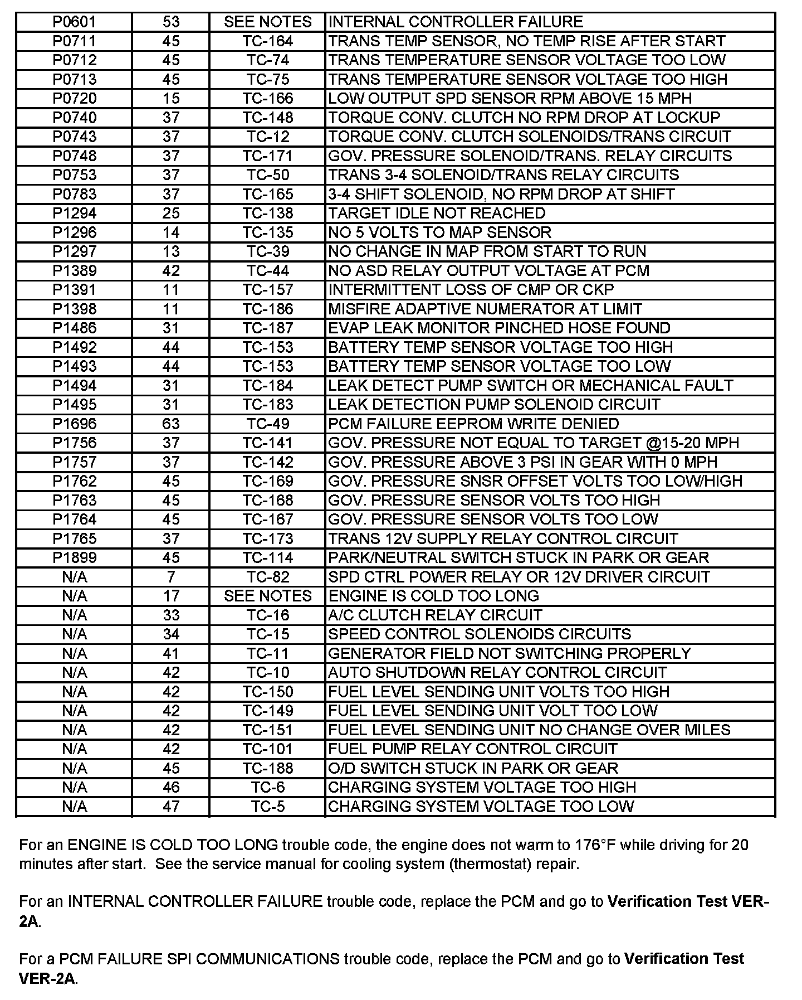

Operation CHARM
: Car repair manuals for everyone.
Русский
Home
>>
Jeep
>>
1997
>>
Grand Cherokee 4WD L6-4.0L VIN S
>>
Repair and Diagnosis
>>
A L L Diagnostic Trouble Codes ( DTC )
>>
Testing and Inspection
>>
P Code Charts
>>
P0713
P0713
P0601 - P1899 And 2 Digit Codes With No Corresponding P Code-Match Code Description For Chart Selection- (Includes Notes):
